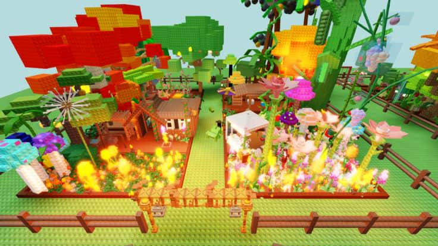

Grow a Garden
Planting is when we put seeds or young plants into the ground so they have the chance to grow. It's vital to provide them with the right amount of water, sunlight, and care so they can stay healthy. Through planting, we can grow edible food, plants, flowers, or parts of trees to use, and enjoy. Plants also help with cleaning the air, and provide oxygen we breathe. Planting teaches us patience, because it takes time to see it grow. Planting also connects us to nature and reminds us we are part of a greater ecosystem. Through planting, we create life which benefits us all, and the world around us.

Things You Need
- Gloves
- Garden spade
- Watering can
- Trowel
- Shovel
- Rake
- Hoe
- Pruners
- Loppers
- Garden hose
- Wheelbarrow
Steps/Procedure to Grow a Garden
- Choose a location that has enough sunlight and easy access to water.
- Prepare the soil by removing weeds, loosening it, and adding compost or fertilizer.
- Plan your garden by deciding what plants you will grow and arranging them properly.
- Plant the seeds or seedlings according to the right depth and spacing.
- Water the plants regularly to keep the soil moist but not flooded.
- Mulch the soil with dried leaves or straw to keep moisture and prevent weeds.
- Maintain the garden by removing weeds, checking for pests, and supporting tall plants.
- Fertilize the plants occasionally with compost or organic fertilizer.
- Harvest the fruits, vegetables, or herbs when they are ripe.
- Continue caring for the garden and replanting for the next season.
To Do to Grow a Garden
- Decide what you want and where to grow. Consider the climate and space you have.
- Test your soil type and pH level. Add organic matter like compost or manure to improve soil quality.
- Pick a spot with sufficient sunlight and water access. Ensure good drainage to prevent waterlogged soil.
- Follow the specific planting instructions for each plant variety. Space them correctly for healthy growth.
- Water plants regularly, but avoid overwatering.
- Keep an eye out for pests, diseases, and nutrient deficiencies. Learn from your experiences and adjust your gardening techniques.
Learn more about gardening at ALMANAC